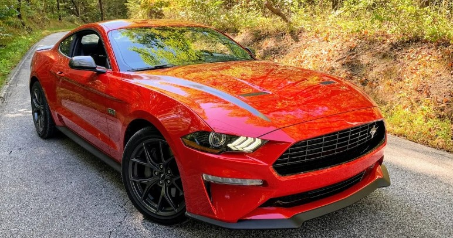

Construyendo Mi Mañana
Un perro mustang
Carro hacer watatatataat, hombre ser feliz.
Mis Aspiraciones y Metas
Mirando hacia el futuro, veo un camino lleno de oportunidades y desafíos emocionantes. Mi trayectoria hasta ahora me ha proporcionado una base sólida, y estoy ansioso por construir sobre ella en los próximos años. Mis aspiraciones abarcan varios aspectos de mi vida, desde mi carrera profesional hasta mi crecimiento personal.
Desarrollo Profesional
En el ámbito profesional, mi objetivo es convertirme en un líder en el campo de la tecnología. Planeo continuar mi educación, posiblemente cursando una maestría en Inteligencia Artificial o Ciencia de Datos. Mi meta es estar a la vanguardia de las innovaciones tecnológicas y contribuir al desarrollo de soluciones que tengan un impacto positivo en la sociedad. Aspiro a fundar mi propia startup tecnológica en los próximos cinco años, enfocándome en crear productos que mejoren la calidad de vida de las personas.
Crecimiento Personal
En cuanto a mi desarrollo personal, me comprometo a mantener un equilibrio saludable entre mi vida profesional y personal. Planeo seguir dedicando tiempo a mi salud física y mental, estableciendo metas de fitness más ambiciosas y explorando prácticas de mindfulness y meditación. También quiero expandir mis horizontes culturales, proponiéndome aprender un nuevo idioma y viajar a al menos un país nuevo cada año para ampliar mi perspectiva global.
Relaciones y Familia
En el aspecto personal, visualizo construir relaciones sólidas y significativas. Ya sea formando mi propia familia o fortaleciendo los lazos con mis seres queridos, mi objetivo es crear un entorno de apoyo y amor mutuo. Planeo dedicar tiempo de calidad a cultivar estas relaciones, reconociendo su importancia fundamental en mi felicidad y éxito general.
Mientras miro hacia el futuro, me siento emocionado y preparado para los desafíos que vendrán. Sé que el camino no siempre será fácil, pero estoy comprometido con mi crecimiento continuo y con hacer una diferencia positiva en el mundo. Con determinación, flexibilidad y una mentalidad de aprendizaje constante, estoy listo para escribir los próximos capítulos de mi historia.